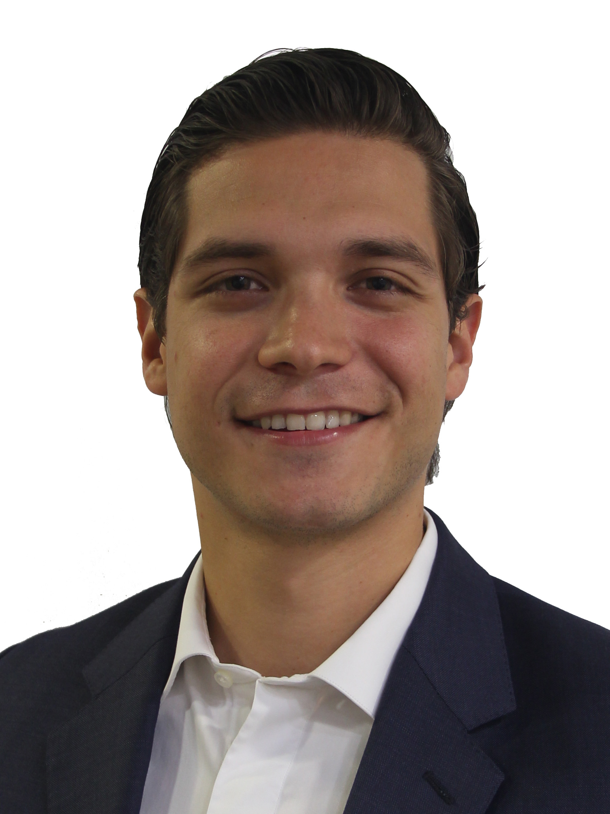

About Me

My name is Jorge Delgado. I was born in Monterrey, Mexico in September 29, 1989. I´ve always loved sports. Since I have memory I can remember to be playing soccer, football, baseball, and more with my Dad. I later started to like basketball as well.
When I went to highschool I had to decide to play either basketball or football. I decided to play football. I had a great time playing during highschool and college. I studied Industrial and Systems Engineer at Tecnologico de Monterrey. After 2 years in college I had some injuries so I decided to retire from football. So I started working as an intern at GE.
When I graduated in may 2013 I was offered a job in GE in the Commercial Team as the Sales Operations Leader for Mexico where I had the opportunity to report directly to the General Manager. This was something the helped me learn everything you need to know on how to run a business. During my last 5 years I have been the Sales Operations Leader for Mexico for 3 years and the Global Sales Operations Leader for a Business for 2 years. GE has tough me so much.
In 2015 I started practicing Triathlon. At the beginning it was just a way to loose some weight that I had been acumulating in the past 3 years when I stopped playing football and started my intership at GE. But throughout the year, that sports flare was reborn, and now I´m so in to it that now my objective is to win a triathlon race. I just need to work really hard, trust the process, and the results will start to show.
I got married last year to Talina Sada, owner of Nude Studio, a women clothing store. This last year has been a blast. We are enjoying every minute together. We are so happy. Following our dreams together.